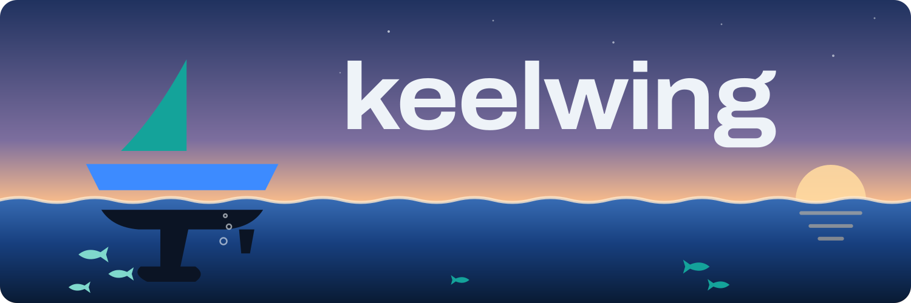

A sailing boat has three layers, and so do our projects. Each one runs on the phone you already have, next to Sailfish OS, not instead of it. Early days: the projects open one by one.
Seaglass: home screen extensions for the stock Sailfish OS UI: folders, glass, search, badges, a richer task switcher, widgets.
Sailyard: a second session on a Sailfish OS phone, per user. Plasma Mobile and Plasma Desktop today, Phosh next.
The runtime under the sessions: GPU, boot screen, the compositor hand-over. Tools for disk usage and monitoring come next.